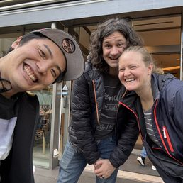

カナダ人客と秋葉原・買い物ツアー

本音
本音You like Berserk. Berserk? You gotta like the gory stuff, eh?相手夫婦の作品の好みが分かる。案内やグッズ提案に使える
本音I was hoping they have something with Chopper on it.客の具体的な推しキャラ。次のおすすめ店を選ぶ材料になる
今日の要点
- カナダ出身の医療関係のゲストと秋葉原で買い物をした
- ドン・キホーテやカード売り場、包丁を買う店を案内した
- 買取店と古本屋、動物カフェを回りビール休憩を取った
- ツアー中に肩が外れた客がいた話と、寒冷地の医療の話が出た
- 米加関係の悪化や退職代行など、日本とカナダの違いを話した
- カナダ人の家族客とチョッパーのグッズを探した
- お土産の相談をし、レトロゲームと格闘ゲームを遊んだ
- リズムゲームに全員で挑戦し、新しいゲームも体験した
- 最後に全員で記念写真を撮りステッカーを印刷して渡した
- 客はInstagramに写真を載せユウキのタグ付けを確認した
目次 全20行
録音1 ・ 12:55〜 ・ 180分
- 12:55声優の話と趣味の雑談
- 13:00買い物相談と映画の話
- 13:05医療の体験談と肩の脱臼
- 13:15ドンキ・カード・包丁の案内
- 13:20出発前の確認とアニメ・音楽の話
- 13:25渋谷の罠とフィギュア談義
- 13:56買取店と古本屋の説明
- 14:01漫画の違いと子ども時代の話
- 14:37買取店と災害・地震の話
- 14:44かわいい系の店と動物カフェ
- 14:52ブラックロータスとビール休憩
- 15:17米加の政治と家族の話
- 15:27米加関係の悪化と若者世代
- 15:37退職代行とキャリア・口コミ
録音2 ・ 15:55〜 ・ 47分
- 15:55客との雑談とチョッパーのグッズ探し
- 16:03お土産の相談とツアー客の話
- 16:08レトロゲームと格闘ゲーム
- 16:16リズムゲームに挑戦
- 16:26写真撮影と新しいゲーム体験
- 16:36記念写真とステッカー、別れの挨拶
朱書き 全92件
録音1 ・ 12:55〜 ・ 180分
What else we need to get for you? → What else do we need to get for you?疑問文なので do we の語順にする
You're catching up until the newest art so far? → Are you caught up to the newest arc so far?art ではなく arc(ストーリーの章)。「追いついている」は be caught up to
You watched a horror movie called Obsession this year? → Did you watch a horror movie called Obsession this year?過去の経験を聞く時は Did you ... で始める
I didn't know it because I don't work in company. → I didn't know because I don't work for a company.「会社に勤める」は work for a company。because の前の it は不要
Because one of my students, because I do Japanese too, and one of my students, he's in a... he's a nurse in a yellow knife. → I teach Japanese too, and one of my students is a nurse in Yellowknife.言い直しが多い。「教えている」は teach、地名は Yellowknife
But not like you did an emergency surgery or something. → But you haven't done anything like emergency surgery, have you?経験を聞く質問にするなら、現在完了で聞くと自然
Because my girlfriend also does nurse and also tour guide. → My girlfriend is also a nurse and a tour guide.職業は do ではなく be 動詞で言う
She got a two job, the tour guide and nurse thing. → She has two jobs: tour guide and nurse.jobs は複数形で、a は不要。got ではなく has
But anything not only in the anime let's say the same a hydrant box or something. → I’d be interested in things beyond anime, like a haunted house or something.「アニメ以外にも」と言うなら beyond anime が自然です。元の後半は聞き取り不確かです。
Alright, or even some gifts to souvenirs to your friends, families. → All right, or maybe some gifts or souvenirs for your friends and family.gift と souvenir は並列にし、相手には for を使います。
Because, you know, we're here at a place like $1 or something, but people resell like, they're four or five times more expensive. → Because, you know, the cards here might be about $1, but people resell them for four or five times more.「they're ... more expensive」は文が二重になっている。「resell them for ~ times more」が自然。
So people can easily tell you guys are Canadian if you look at this fashion of you guys. → People can easily tell you guys are Canadian from the way you dress.「this fashion of you guys」は不自然。「the way you dress」が普通の言い方。
Which is your favorite hero then? → Who is your favorite hero then?人について聞くときは Which ではなく Who を使う。
what do you think this line here for → What do you think this line is for?「この列は何のためだと思う？」は What is this line for? と表現します。
they don't even know how to play Pokemon Club they just buy and resell they think that's just a money or something → They don't even know how to play Pokémon; they just buy and resell the cards because they think it's a way to make money.「お金を作る手段」は a way to make money と言います。
If you like this store, there's also the biggest branch of this one in the five minutes away from here. → If you like this store, there's also a bigger branch about five minutes from here.距離は about five minutes from here と言い、the と in は不要です。
Cause you know Japanese are the Japanese size is smaller than you guys got Shirts → Because, you know, Japanese sizes are smaller than the sizes you’re used to.主語は Japanese sizes とし、「慣れているサイズ」は the sizes you’re used to と表せます。
You don't complain you. → You don't complain to me.「私に文句を言う」は complain to me。
Shiba is really adorable, adorable but really selfish I don't really recommend you people to own → Shiba dogs are really adorable, but they're very selfish. I don't really recommend owning one.犬種を複数形で受け、文を分けると自然。
There's a lot of money here. → You can save a lot of money here.「ここでは節約できる」は save money が自然。
something you gotta tell her which one's gonna sit her all gorgeous → You should tell her which pair looks best on her.眼鏡が似合うことは look best on her で表せる。
And the next quiz, what do you think the line up here for? → And the next quiz: what do you think this line is for?「この行列は何のため？」は this line is for が自然。
My mission gonna take up a show maybe around 200 or more of you guys today. → My mission is to show around 200 or more of you guys around today.主語に続くbe動詞が必要で、「案内する」はshow someone aroundが自然。
You can not least say thank you or good morning or that. → You can at least say “thank you” or “good morning,” right?「せめて」はat leastで、can not leastは誤り。
Yeah, when you read the counter. → Yeah, when you read the characters.漢字を読む話ならcounterではなくcharactersが自然。
That's why those figurines for the price in the arcade, they're actually not for sale. → Those figurines are prizes in the arcade, so they're actually not for sale.「for the price in the arcade」が不自然。景品=prizeを使うと伝わる。
If you go to the stores, riding from the station, they're gonna be most likely for the tourist trucks. → If you go to the stores right by the station, the prices are most likely set for tourists.「riding from」「tourist trucks」は誤り。「right by the station」「for tourists」が自然。
But still, you see many Japanese people come here not as a store, but use here as a library. → But still, you see many Japanese people come here not to shop, but to use it as a library.「use here」は不自然。「use it as a library」が自然。
But kanji, meanwhile, they got around 20 to 30,000 kinds. → Kanji, on the other hand, number in the tens of thousands, though about 2,000 are in common use.常用漢字は約2,000字。実用上の数を添えると誤解がない。
Just like each, you got 40, 50 kinds. → Each of them has about 46 characters.「Just like each」が不自然。ひらがな・カタカナは各46字ほど。
But which doesn't mean the one for the 18th class or something. → But that doesn't mean it's 18+ only.「18th class」は誤り。「18+」「adults only」と言う。
Because we didn't have the internet much, the Wikipedia, so... → Because we didn't have much internet or Wikipedia back then, so...語順が不自然。「back then」で昔の話だと示す。
yeah you don't play any video games nowadays Samuel? → Don't you play any video games nowadays, Samuel?否定疑問文の語順を整えると自然。
he told me about a Uniqlo a while ago right? → I told you about Uniqlo a while ago, right?主語と目的語が逆になっている可能性があります。
this is a Japanese show called a old enough → This is a Japanese show called Old Enough.番組名の前の冠詞を除き、表記を整えます。
We got China, you guys got to go. → We have China next to us, and you have the U.S.「隣に中国がある」という意味なら、We got は We have にし、カナダ側は米国と表すと自然です。
since I'm doing this kind of the job which doesn't mean I'm really social person. → Just because I do this kind of work doesn't mean I'm a very social person.「この仕事をしているからといって社交的とは限らない」は Just because ... doesn't mean ... が自然です。
Last year I paid a lot for making my website for one of my engineers. → Last year, I paid one of my engineers a lot to make my website.人に仕事を依頼したときは paid someone to do something が自然です。
If you wish you can own each box, you can be the box owner, you can sell whatever inside the box. → If you like, you can rent a display case and sell whatever you want inside it.店の箱を借りて販売する説明なら、own より rent が正確です。
If you get something that you want to buy, you write down a paper and the ID in the box and price and you pass it. → If you find something you want to buy, write down the item number and the price, then take the note to the cashier.購入手順を伝えるなら、必要な情報と動作を具体的に示すと分かりやすいです。
That's the reason why we like those small stuff, because we got a smaller room, smaller houses than you guys got. → That's the reason why we like small stuff: our rooms and houses are smaller than yours.stuffは不可算名詞で、比較の形も自然に整理できる。
I have like 10 nieces and nephews. → I have about ten nieces and nephews.人数が概数ならaboutを使うと自然。
You can even get a tattoo in your body. → You can even get a tattoo on your body.タトゥーを体に入れる場合はonを使う。
Many people also coming in for sale your stuff here. → Many people also come in to sell their stuff here.「売りに来る」は come in to sell。for sale は「売り物の」の意味で、your も their にする。
They changed the different characters. → They switch to different characters.the が不要。「別のキャラに乗り換える」は switch to を使うと自然。
Did any big one hit you placed? → Did any big ones hit your area?you placed は your area の誤り。big one も複数形にする。
I've seen many of my guests even though they want day two, they got several more weeks to steal. → I've seen many of my guests spend a lot even on day two, when they still have several more weeks to go.文が崩れている。「まだ数週間ある」は still have several more weeks to go が自然。steal は意味が違う。
Go-men is like my Batman. → Gomen is like 'my bad.'my bad が正しい表現。Batman は聞き間違いか言い間違い。
I have a suggestion that how about making some short break with beer. → How about taking a short break with a beer?suggestion that how about は重複。休憩は take a break と言う。
So he got me the real cheap good deal. → So he gave me a really good, cheap deal.形容詞の並びと副詞の形を整える。
Yeah, just 300 USD monthly → Yeah, just 300 USD a month.月額はa monthが自然な言い方。
That stuff, the pancake, the fish shape, the one they say is a magical Taiyaki. → It's a fish-shaped pancake, and they say this taiyaki is magical.魚形の説明をfish-shapedとすると自然。
It's very North America. → That's very typical of North America.地域の特徴を述べる形なら “typical of” が自然。
Do you think that many people, the patients, they care more than before? → Do you think people are more careful than before?「患者」ではなく一般の人を指すなら “people” で十分。
how do you dislike the people in Manitoba is that more the conservative or more the red blue swinging → How would you describe the people in Manitoba? Are they more conservative, or do they swing between left and right?質問の意図に合わせて語順と表現を整える。
if they cared more about politics they would have stayed in America to vote on the mid-tour → if they cared more about politics they would have stayed in America to vote during the midtermsmid-tourは不自然。中間選挙の時期を指すにはduringが適切
with this 78 kids → with like 7 or 8 kids文脈から78は聞き取り誤り。前述の11人家族についての話から7-8人が正確
we don't have to rely on america as much as more → we don't have to rely on America as muchas much as moreは冗長。as muchで十分に意思が伝わる
But they cannot even do anything. That's what he said. → But they didn't even acknowledge it. That's what he said.文脈から、トランプがカナダの貢献を否定・無視したという意味が自然
I said to me like this is what I wanted → I said to him, 'This is what you wanted'toの後は正しい人称代名詞が必要で、引用は直接法が正確
I've ever heard that there's an industry that something called job quitting agency is. → Have you ever heard of the industry called quitting agencies?「聞いたことある?」はHave you ever heard of ~? を使う。後半の語順も崩れている
Imagine that if you want to quit your job, what would you do? → Imagine you want to quit your job. What would you do?Imagine の後に that if は不要。2文に分けると自然
Even me doing the tour guide, one of my hobbies actually doing a podcast. → Besides being a tour guide, one of my hobbies is doing a podcast.「ガイドをしている」は being a tour guide。hobbies actually doing は is doing にする
Most of my many the listeners of that program they got me some message and asked me how can I do blah blah blah. → Many listeners of that program send me messages asking how to do things.Most of my many the は重複している。「メッセージをくれる」は send me messages
Do and make more of the mistakes. → Just do it and make more mistakes.Do だけでは不自然。mistakes に the や of は不要
I'm not sure if it's only in Japan, but every time I see that the Google map review of the hospital, always really low. → I'm not sure if it's only in Japan, but whenever I look at the Google Maps reviews of hospitals, they're always really low.every time I see that の後に文が続いていない。主語と動詞を補う
I don't see any good review, but always bad reviews. → I never see good reviews, only bad ones.not any ~ but always は不自然。never ~, only ~ が簡潔
If you look at the review of the Pachinko, everybody did the bad review, but I lost money. → If you look at the reviews of pachinko parlors, everyone leaves a bad one, saying 'I lost money.'「悪い評価を書く」は leave a bad review。「負けた」は引用の形にする
It's also really nice in the summer and the hot day to get the beer and outside. → It's also really nice to have a beer outside on a hot summer day.「暑い夏の日に外でビールを飲む」と自然に表せます。
That's what I used to do when I do the tour. → That's what I used to do when I did the tour.過去の習慣なので、when節も過去形にします。
You or him, which one will you get to drink more beer? → Which of you two do you think will drink more beer?二人のどちらかを尋ねる自然な語順にします。
I think it's a cooking glass. → I think it's a cooking class.料理教室はclassで、glassは「ガラス・コップ」です。
That's why you use Oshinobi. → That's why you use Oshinobi.文法上の誤りとは判断できず、修正不要です。
録音2 ・ 15:55〜 ・ 47分
He don't know anything. → He doesn't know anything.主語がheなので動詞はdoesn'tになる。
There's a Chopper main Mugiwara store in Harajuku. → There's a main Mugiwara Store in Harajuku, and it has a lot of Chopper stuff.「Chopper main」は不自然。店の説明を文で言うほうが伝わる。
Yeah, so which one you're looking for? → So, which one are you looking for?疑問文なのでare you lookingの語順にする。
I'm very fly that you're already 22 years old → I'm surprised that you're already 22 years old.flyではなくsurprised。聞き間違いの可能性もあるが言い換えるなら自然。
because I got a two types of the tour guests that I want got so many things → because I get two types of tour guests: ones who buy a lot and ones who don't.a two typesは不自然。two typesにして、タイプの中身も言うと伝わる。
And now you can eat a small one. → Now you can eat the ghosts.大きいエサを食べたあとに食べられるのは小さいエサではなくゴースト。
when you eat some big one you can eat the other characters → when you eat a big one, you can eat the ghostssome big oneは不自然。a big oneにして、ゴーストと言うほうが分かりやすい。
You needed 200 yen. → You need 200 yen.今の話なので過去形ではなく現在形。
Which time do you want to play? → Which one do you want to play?「どれ」と選ぶ場面では time ではなく one を使う。
Can I also make you guys play my favorite? → Can I also have you guys play my favorite?「させる」を頼む場面では、強制感のある make より have や let を使う方が自然。
So, first thing you gotta do is taking a picture of your face in the four icons. → So, the first thing you gotta do is take a picture of your face for the four icons.is のあとは動詞の原形(take)が自然。the も必要。
Not too fast, not too late. → Not too early, not too late.タイミングの話なので fast ではなく early と対にする。
Maybe you wanna do some anime fun, right? → Maybe you wanna play some anime songs, right?fun は名詞として不自然で、「アニメの曲」は anime songs と言う。
We're going to have to get going to our next. → We're going to have to get going to our next spot.next だけでは名詞が欠けているので、spot や stop を補う。
Not you come here by walk, but station. → You didn't walk here. You came by train, right?「Not you come」は語順が不自然。「徒歩ではなく電車で来た」は「came by train」と言う。
So tapping one is easy too, yeah? → So the tapping one is easy too, right?特定のものを指すので「the」が要る。
also gonna share all the data later to you Samuel → I'm also going to share all the photos with you later, Samuel.「share A with B」が正しい形。「I'm」も省かない。「data」より「photos」が自然。
I think sounds like you guys have big family and then maybe have other people who's coming to Japan next time. → It sounds like you have a big family, and maybe other people will come to Japan next time.「I think」と「sounds like」が重複している。「a big family」は冠詞が要り、「who's」は「who are」または「will come」にする。
How about your Suka card right? → Do you have your Suica card with you?「How about ~ right?」は不自然。持っているかの確認は「Do you have ~?」と聞く。「Suka」は「Suica」。
マーク 全182件 ・ 本音とネタの印
録音1 ・ 12:55〜 ・ 180分
ネタYeah, he's 80. 80? 80? Really?80歳の声優が夜に出歩いていたという驚きは、ツアーの雑談に使える話のタネ
客の声2018, together since 2014相手の結婚歴が分かる。打ち解けるきっかけになる個人情報
客の声You like Berserk. Berserk? You gotta like the gory stuff, eh?相手夫婦の好みが分かる。作品の案内やグッズ提案に使える
客の声ADD, attention deficit, hyperactivity disorder集中が続きにくい人には、短めの見どころでツアーを組むと合う
ネタSo that you can get drunk as you play.海外スポーツ文化の違いとして、話のタネになる
ネタWe should go to gambling today場を和ませる冗談。パチンコ店などの案内ネタにつなげられる
やることI gotta find myself a one piece shirt.今日の買い物の具体的な目的になっている
ネタthe first edition of the first volume is really expensiveコレクター向けの話題。古書店やマンガ店の案内に使える
やることMaybe we can try some music, rhythm gamesゲームセンター体験を提案する材料になる
やることYeah, the next thing was 6 o'clock.このあとの時間制限が分かる。時間配分の目安になる
ネタDid you know that today is a national holiday?11月3日は祝日(文化の日)で、街の混雑や飲酒の多さの説明に使える
客の声No, I'm a doctor. What department? Family medicine.相手の職業が分かった。医療の話題で深く話せる
ネタYeah, I got a patient with no fingers.寒冷地の医療の実感がこもったエピソードで、強い話のタネ
学びit's usually turns out to be nothing機内で医師を探す場面の実情が分かる
ネタhe was an emergency doctor映画の医療描写の話は、医療関係者と盛り上がれる
客の声Lady popped her shoulder out.ツアー中のけがの対応事例で、実際の安全対策の参考になる
ネタNaloxone overdoses and stuff.医師が車に常備している薬の話で、驚きのある話のタネ
学びoh, thank you, doctor. We'll go to the hospital right away.ガイドの助言より医師の言葉が効いたという、伝え方の学び
やることWe haven't found a good ramen place yet.食事の希望として次の店探しに使える。
ネタwe had whale for the first time.日本での食体験として話題にできる。
学びAs for drinking, I... Ice wine.カナダの名産として挙がった飲み物。
客の声I know there are lots of interesting Japanese folklore, horror, or that kind of stuff.買い物先や案内先を選ぶ手がかりになる。
やることwe like our pen.職場向けのお土産候補が具体的に出ている。
やることWe're trying to get some interesting art for people watching our house.自宅用の買い物希望として記録できる。
客の声I would be into like cool graphic T-shirt客が実際に欲しいものを言った。店選びの手がかりになる。
ネタyou know where the Kapabashi is料理好きの客に刺さる案内先。ツアーに使える。
ネタsome cars here is going to be almost $100,000カード転売の驚きの数字。客の反応が良い話のタネ。
客の声cooking knife for sure we're looking for買い物の最優先がはっきりした。かっぱ橋につなげられる。
客の声She's trying to make me look sharp服を探す動機が分かる。提案の方向が決まる。
やることat some point we'll go Uniqlo客と合意した行き先。忘れず案内する。
客の声I need to catch up on demon slayer好きな作品が分かる。グッズや話題選びに使える。
客の声we don't have a lot of downtime忙しくてアニメを見る時間がないという本音。
やることWhat are you craving for tonight?夕食のおすすめを用意する必要がある。
ネタwe got the sumo show tonight今夜の予定。会話や時間配分に関わる。
やることYou gotta go to the place Blue Note客が音楽の推薦を求めた。場所や予約の情報を調べておく。
ネタEspecially from Manitoba出身地の話。文化の違いの話題につなげられる。
学びthere's so many tourist traps too客に注意を促した点。ガイドの価値になる話題。
話のタネmy sister turned sailor moon家族へのお土産の手がかり(聞き取り不確か)。
やることyou guys got enough room in your suitcase買い物の量やサイズ提案に影響する。
客の声I like the Guardians of the Galaxy guys好きなヒーローが分かった。グッズ探しに使える。
ネタthis is such a rabbit hole収集趣味の共感を呼ぶ決まり文句。
客の声We do have a lot of shelves置き場所の不安が小さい。大きめの商品を勧めやすい。
ネタthey just buy and resellポケモンカードの行列から出た話題として印象に残る。
やることGonna take a lot of pictures today.旅行中の記録を促す具体的な声かけ。
客の声they didn't worry about you guys日本旅行への家族の反応を聞く会話のきっかけ。
客の声I think they were more scared when I went to Haiti.客の海外経験と家族の反応が分かる。
学びThe medical volunteer.ハイチ訪問の目的として会話に出た。
学びJapanese are the Japanese size is smaller than you guys got Shirts服を勧める時のサイズ案内に活用できる。
ネタwe like something cute. That's why we have a decrease in birth rate, I think.作品の好みと出生率を結びつけたユウキの冗談。
ネタShiba is really adorable, adorable but really selfish I don't really recommend you people to own飼い主としての率直な感想で、会話の印象に残る。
学びWatch the Jojo, Chainsaw Manor, right? And the Ghost in the Shell.相手の好みを探る作品名が具体的に出ている。
学びthe prices here they come with a lens so which is like a 60 or 70 usd like comes with the lensツアー客に伝えられる具体的な買い物情報。
客の声I was 22.手術を受けた年齢について相手が答えている。
ネタThere's some arcade game that you can put the coin and you can raise up your idol girl.行列の理由を説明する具体的な話題。
客の声It's like three, four hours away from here.ユウキ自身の遠距離恋愛についての発言。
ネタthey actually hold their own stick they get in a music storeゲームセンターのリズムゲームに熱中する人の話題になる。
学びthis is 500 yenカプセルトイの料金例として具体的。
学びBecause I teach Japaneseユウキの仕事と日本語の話題につながる。
客の声But maybe you guys speak French, no? Manitoba.相手の出身地や使う言語を聞く会話。
やることWhat do you think they sell in this green building?建物を観察しながら客に考えてもらう問いかけ。
ネタhe's gonna go to the thrift store to sell景品を中古店で売るというツアー中の小話。
学びthis is not a gambling because you don't get money back.パチンコの仕組みを説明する発言。
客の声like the government runs the casinoカナダ人客の文化背景がわかる。比較トークの種になる。
ネタthey're actually not for sale. So there's no price景品フィギュアが非売品という、ツアーで使える説明。
学びeach volume is almost like Samuel like around 10 20カナダでの漫画の価格感がわかり、日本の安さを伝える材料になる。
ネタuse here as a library立ち読み文化の説明として外国人客に刺さる話のタネ。
ネタthey went bankrupt海外支店が破産した理由は、ツアーで話せるエピソード。
客の声see all the first volume One Piece sold out外国人客が1巻を欲しがる傾向がわかる。
学びHiragana and Katakana are the basic characters文字の説明は何度も聞かれる定番ネタ。
客の声I got asked the same question a lot of time客が繰り返し聞く疑問なので、ツアーの説明に組み込める。
客の声I grew up kind of at a lake客の生い立ちがわかり、雑談を広げられる。
ネタBecause we didn't have the internet much攻略本は世代共通の話題。レトロゲーム案内に使える。
客の声Japanese games, like Persona 4客の好みのゲームがわかる。ゲーム系の案内に使える。
ネタRegular prices are like 10 or 20 bucksレトロ品の価格の高さを伝える数字。
ネタOh, you like the Atlas games a lot, yeah?次の話題や店選びのヒントになる。
ネタHow many Pokemon can you name right other than Pikachu?ポケモンの知識を話題にして会話を広げている。
学びthe system brand the Uniqlo one called GUGUとユニクロの関係を説明している。
客の声I'm not like much of a shopper.客の買い物への関心度が分かる。
ネタhe started it by falling down the stairs.居酒屋で起きた印象的な出来事として語られている。
学びBut our guide was excellent. He managed it.酔客への対応が評価されている。
ネタYou play the Zelda too? Of course.ゲームの好みが分かり、ツアー中の会話のきっかけになる。
学びI'm so introverted so I don't want to talk to people as much as possibleユウキの仕事上の振る舞いと本人の性格の違いを知る手がかり。
学びI spend like five to six hours every single day.ユウキがツール作りに多くの時間を使っていることが分かる。
客の声How quiet? It's very quiet.同行者が日本で印象に残った点として挙げている。
学びthis is actually the consignment.秋葉原の店舗で見かける商品の売り方を案内できる。
学びthey take some commission fee, transaction fee.委託販売の精算の仕組みを説明している。
ネタThat's the reason why we like those small stuff, because we got a smaller room, smaller houses than you guys got.日本の住空間と小物人気を結びつけた説明。
ネタMy shibas like this when I do take a walk.柴犬の散歩の様子を伝える話のタネ。
ネタI have like 10 nieces and nephews.親族の人数から会話が広がっている。
ネタor maybe you want to get one of these a sample food samples food sample the sweet samples for emergency foods or drink the beer for emergency emergency beer食品サンプルを非常食やビールに見立てた冗談。
学びBut even Japanese people use gaijin without thinking anything bad.言葉の受け止め方や文脈を考える材料になる。
ネタYou can even get a tattoo in your body.好きな作品への熱意を示す話題。
ネタHave you ever met Pond Stars?質屋で値切る番組。買い取り店の案内で話のタネになる。
学びI'm doing this because you're already 18 years oldきわどい売り場を見せる時の断り方。ツアーで使える。
客の声How about in Manitoba, is there any natural disasters you guys have?災害は海外客と盛り上がる話題。地元の様子も聞ける。
ネタso many buildings really, yeah, yeah, strong地震が心配な客への定番の安心ネタ。
客の声The Omamori, the charm, lucky charm in the Shiba.お守りと柴犬の組み合わせに反応があった。土産の提案に使える。
ネタIt's kind of funny that they think it's safe enough if as long as they hide the nipples with a sticker.日本のカード文化への突っ込み。外国人客に受けるネタ。
ネタWhat's your favorite animal?好みを探る質問として使える。意外な答えが出る。
やることYou should look for a Shiba cafe actually.相手に勧めた具体的な行き先。後で調べて案内できる。
学びsumimasein is more formal to say that日本語レッスンでも使える、謝罪表現の丁寧さの違い。
客の声so hard to find what you want秋葉原のビルの分かりにくさ。ツアー案内の価値を説明できる。
ネタit reminds me of this toy story.人形を見た時の連想。話のタネになる。
ネタBlack Lotus is a specific one.高額カードの代表例。ツアーの目玉の話にできる。
ネタHe's 15 million yen.金額の衝撃が大きい。客の反応も良かった。
やることhow about making some short break with beerユウキが出した次の行動の提案。
ネタI should not have come in here. It was very dangerous.混雑したビルの怖さを笑いにした一言。
ネタYeah, just 300 USD monthly住居費の具体的な数字。
客の声Understand the culture.旅行で知りたいことを本人が答えている。
ネタthis building right here like hundred years ago used to be the train station駅舎を改装した場所という案内の話題になる。
やることthat's the next lesson I gotta do some cheer次回のレッスン内容として乾杯の表現が挙がっている。
本音even though I'm working but I can still drink.働きながら過ごす時間への率直な感想。
学びyou could have one beer in 24 hours.医療職の飲酒に関する契約上の制限として語られた。
ネタif you go into ICU make it out they die so half of the patientsICUの死亡率についての発言だが、聞き取りが不確か。
客の声every year he comes in, and, like, for how many years? Yeah, up until COVID.患者が長年、救命への感謝を伝え続けた具体的な話。
客の声She got called all kinds of names in COVID.感染症対応にあたった医療従事者の苦労が伝わる。
話のタネsome local old guy came out and tell me that you looked at my car number当時の地域の緊張感が伝わる体験。
話のタネevery single morning, like 7am, the mayor had some announcement島での感染対策の様子が具体的に伝わる。
学びnow you don't need to go commute to the officeコロナ禍が働き方に与えた変化の話題。
学びthe more Manitoba and further west in Canada, the more extreme the politicsカナダの地域差を理解する手がかりになる。
学びthere's laws about language. You have to do everything in both English and French in Canadaケベック州の言語政策とカナダの事情が分かる。
ネタMost of my guests, they got kids that when I do the guide, they're almost like angels. But when I say that to everybody, the parents say they're devils.親と子の行動の落差についての面白い観察
ネタAmerica everything is bigアメリカ訪問での文化的な驚きが端的に表現されている
学びit's a little bit more like not what it was before. Like before you could go there and you were like, you felt like you guys were friends kind of thing, but now it just feels like you're likeカナダ人の国際関係への認識の大きな変化
やること|学びwe sent people to Afghanistan. Like we were the first country to join them.カナダの国際的貢献の歴史とそれが忘れられている悔しさ
やること|学びthe longest shift that i worked was 36 hours okay in my training and stuff which is not good医療職の過酷な現実と、若い世代が対抗しようとしている背景
ネタI wonder if I could do like a naturopath and then kind of like, skip all the other stuff若い世代が効率化・最速化を重視する傾向の典型的な例
ネタthere's an agency that helps you to create your job日本特有の業界で、外国人客への話のタネになる(createはquitの言い間違い)
ネタeven some people do that for the quitting part-time job tooバイトの退職にまで使われる具体例で、客の反応が良かった
ネタthe job quitting one also got one too街で実際に見られる例なので、ツアー中に紹介しやすい
客の声They always trying to find some easy answer, short answer.リスナーが近道を求める傾向が分かる。Podcastのネタになる
学びBut my answer is just do it. Just start it.ユウキの持論で、番組や講座の軸にできる
学びyou have to be a good listenerガイドに必要な力についての本音。話しすぎない姿勢にもつながる
学びI'm here to make sure you get better, not to give you what you want.客の要望と本当の利益が違うときの姿勢。ガイドや講師にも通じる
客の声I'll leave you a bad review. And I'm like, I don't care.低評価で脅される場面の本音。レビューとの付き合い方のヒントになる
ネタthe quality of our work is like, do you live or notレビュー依存の仕事の厳しさを表す一言で、トークに使える
本音every time I get the low review, really make me really sadレビューがユウキに与える気持ちを率直に話している。
話のタネShe literally had to go on television. She had to make a video to say don't drink bleach.誤情報への対応として印象に残るエピソード。
学びthis used to be like that. because of the earthquake and the fire that they renovated.建物の歴史を説明する話題になる。
ネタSo back in the days this park used to be the platform, the train station.公園の景色と鉄道の歴史を結び付けられる。
学びYou can do the same thing in Canada. Manitoba also.寿司作りの体験を帰国後にも活かせる。
客の声It's okay. None of you guys are in charge of itinerary.旅程を誰が決めるか、会話の前提が分かる。
録音2 ・ 15:55〜 ・ 47分
客の声So fishing is a big culture.客の地元の名物を知るきっかけ。釣り好きの客には話題にしやすい。
客の声The convenience store. Yeah, in Pamlin Mark.外国人客が日本で恋しくなるものの本音。ツアーのコンビニ立ち寄りに使える。
ネタWe do have deer.奈良のシカなどの話につなげやすい。
客の声I was hoping they have something with Chopper on it.客の具体的な推しキャラ。次のおすすめ店を選ぶ材料になる。
やることYou should go to the, you know what, the Mugiwara store.案内した店。場所(原宿か)を確認して次回から正確に案内できる。
ネタThere are not many tourist traps?日本の食の安心感は海外客に受ける話のタネ。
客の声I don't know that I can make a purchase today.買い物を迷う本音。無理に勧めず、後日の案内につなげられる。
ネタBy the way, my hometown is Saitama Prefecture.自己紹介の話のタネ。誰の発言かは要確認。
ネタYou kind of look like it, right?キャラに似ていると言う軽い冗談。場が和む。
やることHow about buying one of these as a gift?お土産提案の言い方としてそのまま使える。
ネタthat you're already 22 years old客の年齢が分かった場面。会話のきっかけになる。
客の声I'm surprised that he didn't buy much客の買い物傾向の観察。次回の案内先を決める手がかり。
学びI got a two types of the tour guests客層の分類。ガイドの工夫を考えるネタになる。
ネタ9 people in time. 4 Canadians.この日のグループ構成の記録。
ネタDo you know how to play Pac-Man?外国人客に遊び方を教える導入の言い方。
学びyou can eat the other charactersルール説明の短い言い方。ほかのゲームにも使える。
やることYou needed 200 yen.客に事前に小銭を準備してもらうよう伝える材料。
ネタDo you have a lot of stamina to play this?客を盛り上げる声かけ。
ネタyeah okay this is a teamwork man協力して体を動かす場面の雰囲気が伝わる。
ネタYou're gonna have a muscle pain tomorrow.運動の大変さをからかう軽いやりとり。
客の声This is an easy one for you, but not for him.相手によって難しさが違うという声が残っている。
ネタDo you remember what DDL stands for?ゲーム用語の略称クイズは、ツアーの導入トークとして使える。
客の声You got this, Nikki! Don't give up!励ます声かけで場が盛り上がっており、ガイドの定番フレーズとして使える。
客の声I'm a little bit nervous初挑戦の客の本音で、次回の声かけの参考になる。
客の声I thought it was very hard.難易度への率直な感想で、曲選びの調整に活かせる。
ネタCan I also make you guys play my favorite?自分の推しゲームを客に遊ばせる流れは、ツアーに組み込める。
学びYeah, you got two fingers at the same time.初心者がつまずきやすい点で、事前説明に入れられる。
学びToo strong! Nice! Gently!タッチの強さのコツは、そのまま案内の説明に使える。
ネタMaybe you wanna do some anime fun, right?アニメツアーらしく、ゲームとアニメ曲をつなげる提案ができている。
ネタYou guys are competing each other by the way.対戦形式にすると盛り上がる。
やることWe're going to have to get going to our next.ゲーセンでの滞在時間を管理し、次のスポットへ移る合図の出し方を整える必要がある。
ネタHenry, you won.勝敗が出たことが、締めの盛り上がりになった。
ネタWhich one do you like better? The dancing one or the tapping one?参加者の好みを聞く小さな質問は会話のきっかけになり、体験の感想も拾える。
ネタWell, it's good exercise, huh?体を動かす企画への軽い一言で場が和む。次回も使える。
学びLet's go! 1, 2, 3, 4, 4!数字の掛け声で全員の動きが揃い、写真が盛り上がる。定番化できる。
やることalso gonna share all the data later to you Samuelサミュエルへの約束。忘れず送る。
ネタsounds like you guys have big family家族でのリピートや紹介につながる。次回の案内のきっかけにできる。
客の声It's so easy. It's nice to learn about it.体験への好意的な感想(聞き取り不確か)。レビューや紹介文に使える。
やることMake sure you get enough rest翌朝の行動に備える声かけ。ツアー後の定型フレーズにできる。
やることHow about your Suka card right?翌日の移動に必要な持ち物の確認。次回も解散時に案内する。
次に活かす
- 客の夕食と音楽の希望に備え、店の場所と予約情報を事前に調べる
- 医師の言葉が効いた経験から、助言は専門家の言葉を借りて伝える
- きわどい売り場は断り方を決めておき、案内前に客へ一言伝える
- 買い物の量とサイズの提案は、客の持ち帰り条件を聞いてから行う
- 撮影した写真や動画は後で全データを共有すると約束して送り忘れを防ぐ
- 解散時にSuicaを持っているか確認する
- 解散時に翌朝に備えて休むよう声をかける定型にする
- 大家族の客は次回に別の家族を案内できる可能性がある
文法のまとめ
録音1
- 疑問文の語順：What else we need → What else do we need
- 職業は be 動詞：does nursing → is a nurse
- 複数形と冠詞：a two job → two jobs
録音2
- 三単現の抜け：He don't know → He doesn't know
- 疑問文の語順：which one you're → which one are you
- 時制：You needed 200 yen → You need 200 yen
‹ ゲスト帳にもどる